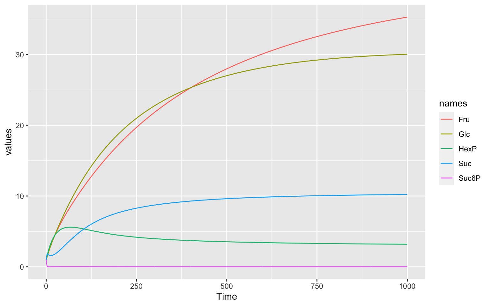

This document follows closely the Mendes 2009 paper1 on COPASI use cases.
If we want to optimise something, we either want to minimise or maximise a specific target value.
First, we have to load CoRC and tidyverse. Make sure you have these packages downloaded. If you have not yet downloaded CoRC, take a look at the tab Download.
library(CoRC)
library(tidyverse)# install tidyverse
install.packages("tidyverse")
# install CoRC from GitHub
install.packages("remotes")
remotes::install_github("jpahle/CoRC")We will work with model Nr. 23 in BioModels2, which is a simulation of analyzing sucrose accumulation in sugar cane (Rohwer 2001). The model can be loaded directly from the biomodels database; in case this does not work it is also stored in this repository (see commented-out line).
loadSBML(biomodels_url(id = 23, format = "sbml"))
#> # A COPASI model reference:
#> Model name: "Rohwer2001_Sucrose"
#> Number of compartments: 1
#> Number of species: 13
#> Number of reactions: 11
# if that does not work, try:
# loadSBML("https://raw.githubusercontent.com/jpahle/DynamiCoRC/main/models/BIOMD0000000023_url.xml")CoRC will give out general specifications about the model upon loading. To get a better understanding of the model, we will first take a look at the reactions:
getReactions()
#> # A tibble: 11 × 6
#> key name reaction rate_law flux number_flux
#> <chr> <chr> <chr> <chr> <dbl> <dbl>
#> 1 (v1) v1 Fruex = Fru FunctionDB.Funct… 0 0
#> 2 (v2) v2 Glcex = Glc FunctionDB.Funct… 0 0
#> 3 (v3) v3 ATP + Glc = HexP + ADP; Fru FunctionDB.Funct… 0 0
#> 4 (v4) v4 Fru + ATP = HexP + ADP; Glc FunctionDB.Funct… 0 0
#> 5 (v5) v5 Fru + ATP = HexP + ADP FunctionDB.Funct… 0 0
#> 6 (v6) v6 2 * HexP = UDP + Suc6P; phos FunctionDB.Funct… 0 0
#> 7 (v7) v7 Suc6P = Suc + phos FunctionDB.Funct… 0 0
#> 8 (v8) v8 HexP + Fru = Suc + UDP FunctionDB.Funct… 0 0
#> 9 (v9) v9 Suc = Fru + Glc FunctionDB.Funct… 0 0
#> 10 (v10) v10 HexP = glycolysis FunctionDB.Funct… 0 0
#> 11 (v11) v11 Suc = Sucvac FunctionDB.Funct… 0 0Of interest to us are reactions v11 (accumulation of sucrose in vacuoles) and v9 (hydrolysis of sucrose), which decreases our overall productivity.
We can see the behaviour of the species in the plot below. The component we are interested in is Sucrose (Suc).

tc1 <- runTC(duration = 1000, dt = 1)$result %>%
pivot_longer(-Time, names_to = "names", values_to = "values")
ggplot(data = tc1) +
geom_line(aes(x = Time, y = values, color = names))We want to maximise our productivity, which we can define as the ratio of fluxes of accumulation over hydrolysis. \(J_{v11}/J_{v9}\). For our optimisation algorithms it is necessary to define our optimisation goal as a minimum: we want to minimize \(J_{v9}/J_{v11}\)
What we just defined is called an objective function.
In CoRC we can define the objective function like this:
objf <- "{(v9).Flux}/{(v11).Flux}"objf <- paste0(reaction("(v9)", reference = "Flux"), "/", reaction("(v11)", reference = "Flux"))
objf
#> [1] "{(v9).Flux}/{(v11).Flux}"Now we have to think about, what we are able to change to reach the minimum possible value for our objective function. We can assume for this teaching example that we are able to manipulate the steady state levels of our enzymes in reactions v1, v2, v3, v4 and v5.
We have to define our optimisation parameters in CoRC. It is possible to specify several aspects of our parameters, e.g. give them a specific starting value or bounds on how far the estimation is allowed to search. We will say that we can downregulate an enzyme by 50% or overexpress it by 400%. The start values are going to be the current values in our model.
parameters <- list(
defineOptimizationParameter(ref = "{(v1).Vmax1}",
start_value = getParameters("(v1).Vmax1")$value,
lower_bound = 0.5 * getParameters("(v1).Vmax1")$value,
upper_bound = 4 * getParameters("(v1).Vmax1")$value),
defineOptimizationParameter("{(v2).Vmax2}",
start_value = getParameters("(v2).Vmax2")$value,
lower_bound = 0.5 * getParameters("(v2).Vmax2")$value,
upper_bound = 4 * getParameters("(v2).Vmax2")$value),
defineOptimizationParameter("{(v3).Vmax3}",
start_value = getParameters("(v3).Vmax3")$value,
lower_bound = 0.5 * getParameters("(v3).Vmax3")$value,
upper_bound = 4 * getParameters("(v3).Vmax3")$value),
defineOptimizationParameter("{(v4).Vmax4}",
start_value = getParameters("(v4).Vmax4")$value,
lower_bound = 0.5 * getParameters("(v4).Vmax4")$value,
upper_bound = 4 * getParameters("(v4).Vmax4")$value),
defineOptimizationParameter("{(v5).Vmax5}",
start_value = getParameters("(v5).Vmax5")$value,
lower_bound = 0.5 * getParameters("(v5).Vmax5")$value,
upper_bound = 4 * getParameters("(v5).Vmax5")$value)
)make_opt_param <- function(name) {
value_ref <- parameter_strict(name, reference = "Value")
value <- getValue(value_ref)
defineOptimizationParameter(ref = value_ref,
start_value = value,
lower_bound = 0.5 * value,
upper_bound = 4 * value)
}
parameters <- lapply(c("(v1).Vmax1", "(v2).Vmax2", "(v3).Vmax3", "(v4).Vmax4", "(v5).Vmax5"), make_opt_param)Now we have to choose which optimisation method we will use for
optimisation. For our first try we will use Truncated Newton.
There are a lot of different methods available in CoRC
which you can find in the documentation of the
runOptimization() function.
method <- 'TruncatedNewton'Bear in mind, that there is no such thing as “the perfect” or “the right” optimisation method. It is always advisable to try out several (global and local) algorithms.
Now we have all elements we need for our optimisation routine. We still need to specify a few arguments in our function:
steadyState, as our
optimisation optimises fluxes in the steady statepar_before <- getParameters()$value
result <- runOptimization(expression = objf,
subtask = 'steadyState',
randomize_start_values = FALSE,
update_model = TRUE,
parameters = parameters,
method = method)
result$main$objective_value
#> [1] 0.07816841
result$parameters
#> # A tibble: 5 × 6
#> parameter lower_bound start_value value upper_bound gradient
#> <chr> <dbl> <dbl> <dbl> <dbl> <dbl>
#> 1 (v1).Vmax1 0.143 0.339 0.339 1.14 -0.254
#> 2 (v2).Vmax2 0.143 0.342 0.342 1.14 -0.225
#> 3 (v3).Vmax3 0.0985 0.0985 0.0985 0.788 1.21
#> 4 (v4).Vmax4 0.0985 0.196 0.196 0.788 0.00801
#> 5 (v5).Vmax5 0.082 0.134 0.134 0.656 0.185Our new model with the updated parameter values looks like this:
tc <- runTC(duration = 1000, dt = 1)$result %>%
pivot_longer(-Time, names_to = "names", values_to = "values")
ggplot()+
geom_line(data = tc1, linetype = "dashed", aes(x = Time, y = values, color = names))+
geom_line(data = tc, aes(x = Time, y = values, color = names))The dashed lines were from the timecourse before the optimisation, so we can see that our optimisation routine worked very well!
Mendes P., Hoops S., Sahle S., Gauges R., Dada J., Kummer U. (2009) Computational Modeling of Biochemical Networks Using COPASI. In: Maly I. (eds) Systems Biology. Methods in Molecular Biology (Methods and Protocols), vol 500. Humana Press. https://doi.org/10.1007/978-1-59745-525-1_2↩︎
Rohwer, Johann M., and Frederik C. Botha. “Analysis of sucrose accumulation in the sugar cane culm on the basis of in vitro kinetic data.” Biochemical Journal 358.2 (2001): 437-445.↩︎